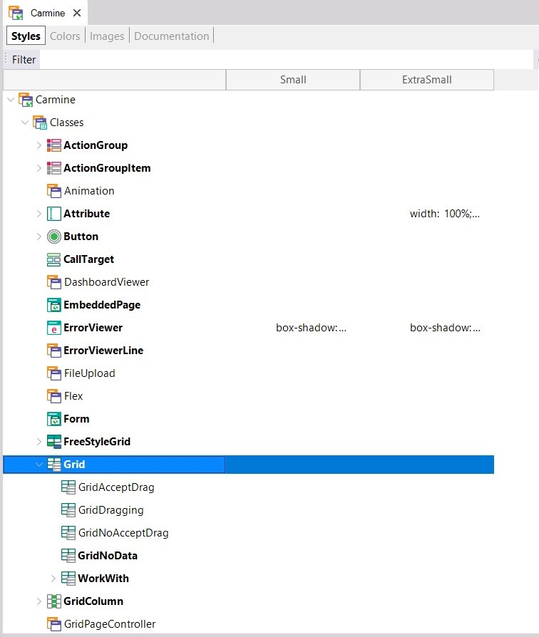
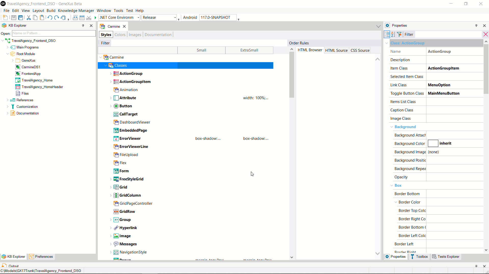
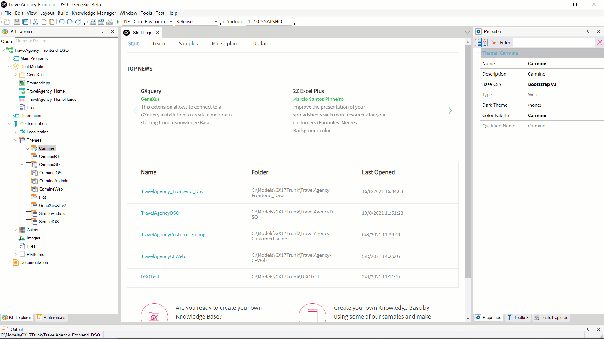

The Design System Object (DSO) implies a change of paradigm for design definition in GeneXus. Its objective is to address all the weaknesses of the Themes and increase the impact of design on the generated application. It has been created to replace the Theme, of which it is an evolution.
In its first version, just like a Theme, a Design System impacts the style of on-screen controls, but is designed to include the rendering of those controls as well. In sum, it is intended to be the ultimate source of design truth for applications.
Which Theme weaknesses are being referred to? How does the Design System Object improve them? These are the questions that will be examined in this article.
When developing an application in the Knowledge Base with a small set of controls (Grid, Edit, Text Block, Error Viewer, etc.), having an object that handled classes for all these controls was a great improvement over defining the style of each one of them on each screen. This is how Themes came about. The place in the Knowledge Base for defining the style of the application was based on a scheme known to the GeneXus developer: it was done through the use of properties.
Due to the evolution of technology, you no longer generate only for Web but also for Mobile. This involves new applications with new styles, which are different from Web applications. The Theme concept is then extended to also include these types of applications.
In this way, Knowledge Bases have evolved and today they implement more than one application – for example, a Back-office application and a Customer-facing application. In addition, all these applications are multi-experience; that is, developed for both native Web and Mobile platforms. One Theme is not enough, and at least two will be needed: for Web and Mobile.
In addition, the UI has started to play a more significant role. As a result, more eye-catching and customized applications are needed; also, Patterns and frameworks emerge that extend the Knowledge Base and generate great visual impact and experience for the end user. In general, these extensions already provide a design for the objects they share or generate. This implies that they define their own classes, thus increasing the size of the Theme object because these classes must be added.
First weakness: Themes are not articulable, which means they cannot be divided and assembled. They all have the same structure defined; those providing a design (Theme) will have an impact on the other Themes defined in the Knowledge Base. The resulting object with the design definition (a CSS file for Web) will contain the combination of all the classes defined by each of the Themes, even if they are not used. This directly impacts the generated applications' performance when calculating the screen to be displayed to the client (the larger the resource, the longer the render calculation time).
At some point, this Theme feature was considered an advantage: the ability to change a Theme at runtime with the peace of mind of knowing that each Theme had the necessary class structure. But then there was an explosion in the creation of classes and what used to be a strength suddenly became a weakness.
In light of this experience, packaging a Theme to facilitate its distribution is something that has been discarded. Dividing the generated CSS in order to have the minimum number of classes required to render a certain page is currently a priority to generate applications with good UX.
Second weakness: Different classes are handled according to the type of control.

This is useful when selecting a certain class for a control: since each control has its own characteristics (for example, you know a Combo box has a border and a Text block usually doesn’t), having a group of classes that apply to the Combo box instead of listing all the classes defined seemed like a good idea (typed classes). However, the drawback of this scheme is that a class cannot be reused in different types of controls. For example, to change the Font type of different controls, you have to do it in the classes of each type instead of simply referencing the class with the Font in any control type; this ends up affecting the size of the generated resource.
Third weakness: Difficulty understanding inheritance between classes. Class inheritance helps to generate a smaller resource by defining, for example, the Font in the parent class and then having all the child classes inherit that value so that you don't have to define it in each of them. However, this scheme involving a hierarchy tree and set of properties for each node doesn't allow viewing which property values are defined for a particular class; sharing a structure of fixed properties, which are mostly unspecified, makes it difficult to understand which properties are effectively defining a certain class or if the value is inherited.
A problem derived from this is that the tree tends to grow; since the structure is not understood, when adding a style to a control a new class is usually created so as not to potentially affect the design of other controls.

Fourth weakness: change of classes at runtime, which is not clear to the developer. Every class inheriting from the Attribute class defined in a Web Theme—for example, “AttributeX”—will automatically have a child class defined, “ReadonlyAttributeX,” without it being very clear why. When generated in Java or .Net, if an attribute/variable control is readonly and has an AttributeX class assigned to it, at runtime the class will be changed to ReadonlyAttributeX, and it will not be obvious at design time. In addition, when an Attribute/Variable control is readonly, the characteristics are likely to be identical, regardless of the specific class of the control. For example, in that case you may want the control to have the characteristics of its defined class, but with a different background color and a less visible border that is the same for all. With the Theme solution, you have to repeat exactly the same background color and border characteristics in each Readonly subclass.
Read Readonly Class Comparison between Theme and Design System Object
Fifth weakness: Class maintenance when trying to change a certain color, font type or other feature at the global Theme level. One of the latest evolutions of the Theme was the definition of a Color Palette object: an abstraction of design constants (‘tokens’ in the Design System) that allows defining a name for what will be, for example, the background color and then use that name in the classes instead of the name of a color. Thus, changing the background color only implies modifying the color palette. However, you can't do the same with the font or font size; instead, you will have to go to each class and change this feature in each definition. Fonts, including their sizes, radius, spacing, borders, etc. can't be abstracted. Another limitation of the color palette is that it can't be switched at runtime.
Sixth weakness: Designers don't understand the Theme because the language they use is different. For the Web platform, designers who are also front-end developers work with CSS and it is the GeneXus developer who must translate the CSS to the Theme. In complex scenarios, there is no translation between them and a Custom node in the Theme will have to be used to define CSS language directly. In other cases, when designers don't have front-end design skills, they design at a high level in a tool such as Sketch, from which the CSS code is obtained if it is a web design, but the communication between designers and GeneXus developers is even more difficult. The gap between these two languages sometimes becomes a significant obstacle.
● Themes make understanding and maintenance more complicated:
○ There is duplication between Mobile and Web;
○ Some classes are in a Theme, but are not involved at all in the design of the objects to which the Theme applies;
○ Even though most of the properties of a class are not used, they are displayed in the editor.
○ in some cases, classes are defined at design time, but at runtime other classes are assigned and that is obscure to the developer.
● They negatively affect object load performance at runtime due to their size.
● They are difficult to translate from a file given by the designer or directly from the CSS for Web.
● They are not modular.
Design System Objects are designed to keep the well-known qualities of Themes:
● Definition of control styles in one place.
● Ability to change the design at runtime.
● CSS rules support for changing the design according to screen size, orientation, and so on.
In addition, they target all the Theme's weaknesses:
● They are multi-experience; that is, the same DSO can be used for both Web and Mobile objects.
● Improved understanding of the style, with a more granular definition where inheritance between classes is explicit, , as well as the classes that will be applied to each control at runtime.
● Generation of smaller CSS files containing:
○ The definition of classes defined by the DSO, avoiding the generation of entries for classes not used in that design. Defining a class in the DSO only affects the generation of that object and not the other DSO in the Knowledge Base.
○ Reuse of a class for any type of control.
● They can also be composed, importing another or several DSO and even only some of their sections, or a CSS if it is Web. This provides much greater flexibility.
● The language is much closer to that of the designer. In fact, for the Web case, the CSS classes can be copied directly.
To achieve all these improvements, some strong aspects of Themes had to be given up. For example, cross-referencing of classes is not strict in DSO, which means that you can have a control referencing a class that may not be defined in the DSO being used.
However, they also bring other qualities of their own:
● A larger number of tokens (not only colors) can be defined, including fonts, borders, radius, zindex, etc., and their values can be changed at runtime through options. For example, some colors for dark mode and others for light mode.
● Since the design is contained in them, you can think about modularizing DSO.
As already mentioned, the objective is for DSO to become the ultimate source for design truth in the near future.
To meet this objective, what is missing in its first version is the determination of control types at the global level of the Knowledge Base. In addition to the Tokens and Styles parts already defined in the object, a third section has been designed: Elements. This will allow us, among other things, to define a default for each type of control. For example, when using an Attribute on screen, GeneXus uses an Edit control by default to handle that entity. To show that entity with another type of control, you have to go to the properties of the control on screen to change it, for example, to a User Control. This change is made at the control level on each screen, and there is no way to make it at the global application level. What if you could also change the type of control using a class? This will be another evolution of the DSO, which will allow having a global impact on the application with a complete Design System.
Themes and Design Systems will coexist for a while because we want GeneXus developers to be able to upgrade GeneXus without having their Knowledge Base impacted by unintentional design changes.
A Design System can now be referenced wherever a Theme can be used.
In addition, to assist in the migration of existing Knowledge Bases, you have the option to convert a Theme object into a Design System object through the option “Save as Design System.” From now on, when replacing the Knowledge Base style from the Theme with the converted Design System, the application should continue working in the same way.

|
CONCEPT |
THEME |
DSO |
|
STRUCTURE |
Not all Themes have the same structure. |
They don't have the same structure, which simplifies the .css and resources, taking only what is necessary (granularity is allowed). |
|
INHERITANCE |
There is inheritance through the “Base Theme” property: a Theme can have only one parent. |
There is inheritance through the Design System Object @import rule. A DSO can have N parents or inherit only part of another DSO. Note that it is possible to define the Design System Object @import rule within a #region. |
|
PLATFORM |
ThemeWeb and ThemeSD are different. |
One DSO for any platform. |
|
MODULAR |
No |
Yes |
|
PREDEFINED CLASSES |
Yes (set of base classes; each control type has one of these classes defined). They must be defined in every Theme. |
No |
|
CLASS INHERITANCE |
Yes |
Yes. Through the Design System Object @include rule. |
|
CLASS COMPOSITION |
No |
Yes |
|
CLASS CROSS REFERENCE |
Yes |
Yes |
|
CLASS REFERENCE IN CODE |
Yes (expression “ThemeClass:ClassName”). |
Yes (expression “StyleClass:ClassName”). |
|
CONSUME CSS |
Yes (option "Import CSS..." in the Theme). |
Yes (copy & paste from CSS directly to Styles). |
|
CHANGE COLORS AT GLOBAL LEVEL |
Yes, through the Color Palette. |
Yes, by defining Tokens. |
|
CHANGE TYPOGRAPHY AT GLOBAL LEVEL |
No, the “Font” property must be changed at the level of each child class of the Root node in the Styles. |
Yes, by defining Tokens. |
|
CHANGE STYLE AT RUNTIME |
Yes. Function SetTheme(). |
Yes. Function SetTheme(), which will soon be renamed to SetStyle() and can be used for both. |
Restrictions regarding the coexistence of Themes and DSO:
● You can't have a DSO and a Theme with the same name since both can generate the same physical resource (for the Web platform, they both generate a .css with the name of the object).
● Since DSO can be modularized, it is possible to have more than one DSO with the same name in different modules.
● There are cases where if you generate an object to use a DSO, at runtime you can’t change it to use a Theme, because the way selectors are generated in HTML is different. See, for example, how Readonly class handling is changed in DSO (ref.).
Applications using DSO do not support Internet Explorer. To take the most out of modern browsers some features of CSS like CSS variables are used when using DSO.
More information about browser support at GeneXus 17 hardware and software requirements.
Since GeneXus 17 Upgrade 6.
| Backlinks | ||
| Category:Design System Object | Toc:Design Systems | How To: Convert Theme to Design System |